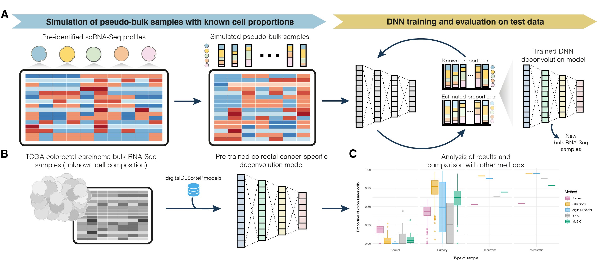

An R package to deconvolute bulk RNA-seq from scRNA-seq data based on Neural Networks
The digitalDLSorteR R package provides a set of tools to deconvolute cell type proportions of bulk RNA-seq data through the development of context-specific deconvolution models based on single-cell RNA-seq (scRNA-seq) data. These models are able to accurately estimate cell type proportions of bulk RNA-seq samples from specific biological environments. For more details about the algorithm and the functionalities implemented in this package, see Torroja and Sanchez-Cabo, 2019, Mañanes et al., 2024, and https://diegommcc.github.io/digitalDLSorteR/.

Installation
digitalDLSorteR is available on CRAN and can be installed as follows:
install.packages("digitalDLSorteR")The version under development is available on GitHub:
if (!requireNamespace("remotes", quietly = TRUE))
install.packages("remotes")
remotes::install_github("diegommcc/digitalDLSorteR")The package depends on the tensorflow R package, so a working Python interpreter with the Tensorflow Python library installed is needed. The installTFpython function provides an easy way to install a conda environment called digitaldlsorter-env with all necessary dependencies covered. We recommend installing the TensorFlow Python library in this way, although a custom installation is possible. See the Keras/TensorFlow installation and configuration article of the package website for more details.
library("digitalDLSorteR")
installTFpython(install.conda = TRUE)Rationale of digitalDLSorteR
The algorithm consists of training Deep Neural Network (DNN) models with simulated bulk RNA-seq samples whose cell composition is known. These pseudo-bulk RNA-seq samples are generated by aggregating pre-characterized scRNA-seq data from specific biological environments. These models are able to accurately deconvolute new bulk RNA-seq samples from the same environment, as they are able to account for possible environmental-dependent transcriptional changes of specific cells, such as immune cells in complex diseases (e.g., specific subtypes of cancer or atherosclerosis). This aspect overcomes this limitation present in other methods. For instance, in the case of immune cells, published methods often rely on purified transcriptional profiles from peripheral blood mononuclear cells despite the fact that these cells are highly variable depending on environmental conditions. Thus, this feature together with the fact that scRNA-seq datasets improve over time (the more cells, the more variability learnt by the models) will lead to build more accurate and comprehensive models.
Usage
The package has two main ways of use:
- Using pre-trained models included in the digitalLDSorteRmodels (https://github.com/diegommcc/digitalDLSorteRmodels) R package to deconvolute new bulk RNA-seq samples from the same environment. So far, the available models allow to deconvolute samples from human breast cancer (GSE75688 data from Chung et al., 2017 used as reference), and colorectal cancer (GSE132465, GSE132257 and GSE144735 data from Lee, Hong, Etlioglu Cho et al., 2020 used as reference). For more details about this workflow, please see the Using pre-trained context-specific deconvolution models article. Disclaimer: these models intend to be a quick option to deconvolute samples from the same biological environment, but we strongly recommend generating new models with data manually curated by the users.
- Building new deconvolution models from pre-characterized scRNA-seq datasets. This is the main way to use digitalDLSorteR. For more information on the workflow, see the article Building new deconvolution models.
To use pre-trained context specific deconvolution models, digitalDLSorteR relies on the digitalDLSorteRmodels data R package. Therefore, it should be installed along with digitalDLSorteR from GitHub as follows:
remotes::install_github("diegommcc/digitalDLSorteRmodels")Once digitalDLSorteRmodels is loaded, the pre-trained models are available. See the article Using pre-trained context-specific deconvolution models for an example.
Final remarks
- Regarding pre-trained models, if you generate new models and want to make them available through the digitalDLSorteRmodels R package for other users to use them, contact with us!
- We provide some pre-trained models that take into account genes that seem to be relevant for these environmental conditions. However, as these genes might be different depending on the bulk RNA-seq to be deconvoluted, we strongly recommend creating new models through the workflow explained here.
- Contributions and suggestions are welcome!
Citation
Please, if you use digitalDLSorteR in your research, cite Torroja and Sanchez-Cabo, 2019 (first description of the algorithm) and Mañanes et al., 2024 (version for spatial transcriptomics data whose development has served to improve digitalDLSorteR as well).
References
| Chung, W., Eum, H. H., Lee, H. O., Lee, K. M., Lee, H. B., Kim, K. T., et al. (2017). Single-cell RNA-seq enables comprehensive tumour and immune cell profiling in primary breast cancer. Nat. Commun. 8 (1) 15081 doi:10.1038/ncomms15081 |
| Lee, HO., Hong, Y., Etlioglu, H.E. et al. (2020). Lineage-dependent gene expression programs influence the immune landscape of colorectal cancer. Nat. Genet. 52 594-603 doi:10.1038/s41588-020-0636-z |
| Torroja, C. and Sánchez-Cabo, F. (2019). digitalDLSorter: A Deep Learning algorithm to quantify immune cell populations based on scRNA-seq data. Frontiers in Genetics 10 978 doi:10.3389/fgene.2019.00978 |
| Mañanes, D., Rivero-García, I., Relaño, C., Jimenez-Carretero, D., Torres, M., Sancho, D., Torroja, C. and Sánchez-Cabo, F. (2024). SpatialDDLS: An R package to deconvolute spatial transcriptomics data using neural networks. Bioinformatics 40 2 doi:10.1093/bioinformatics/btae072 |